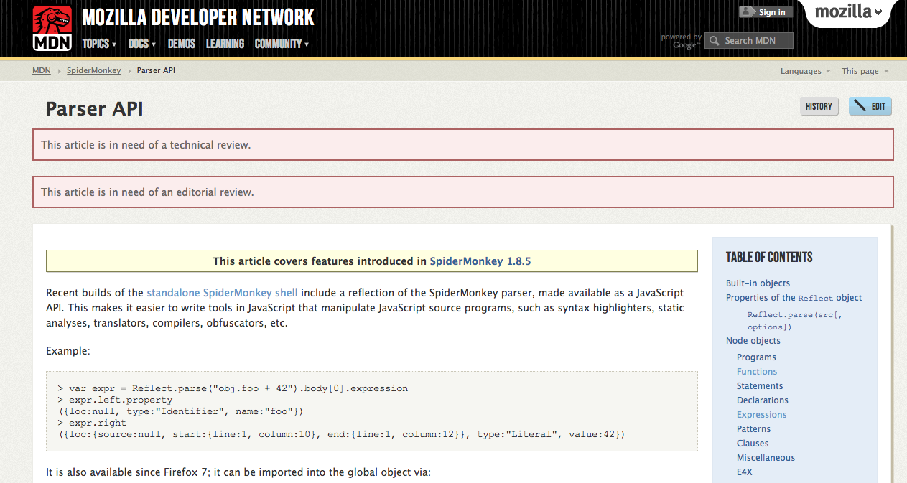
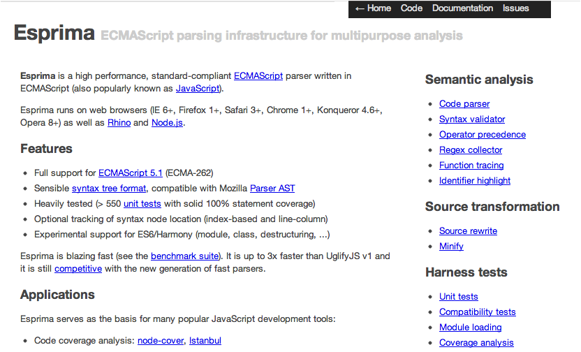
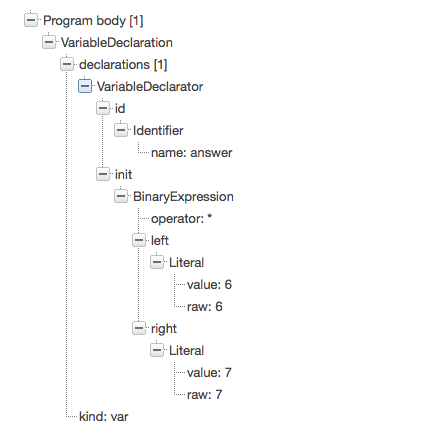
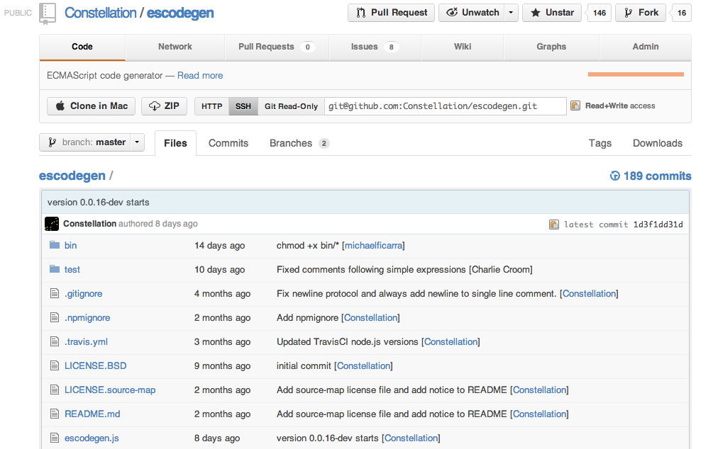
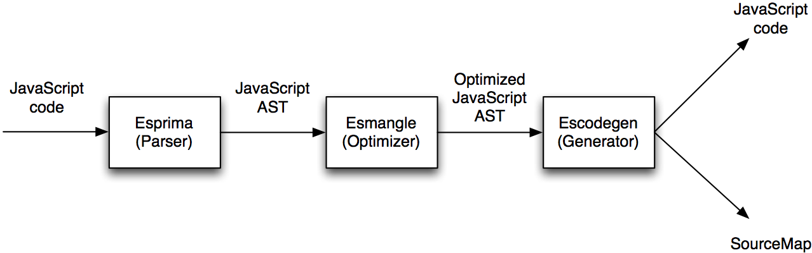
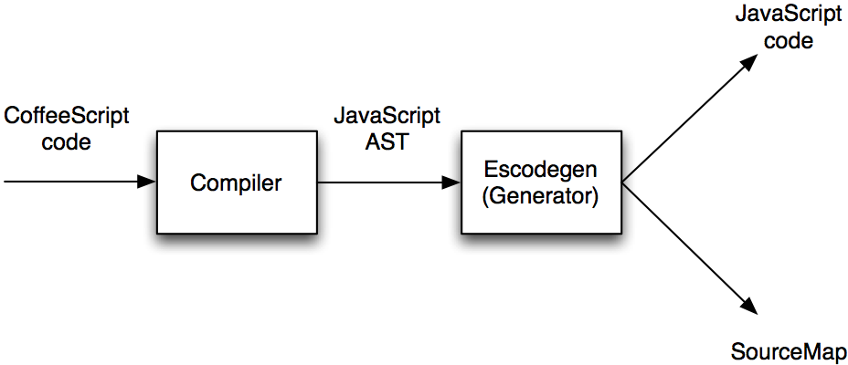
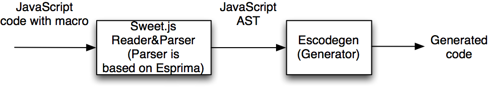
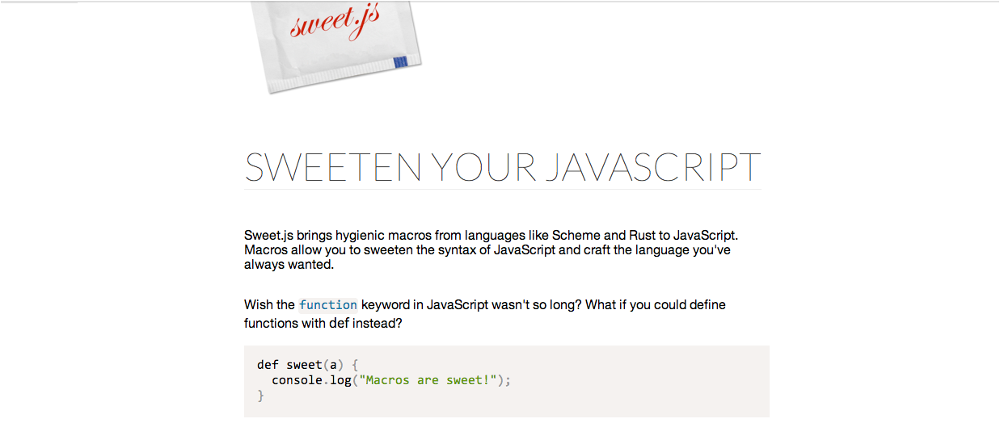
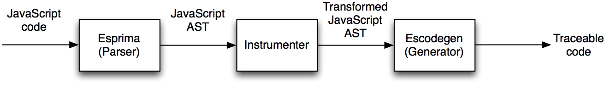
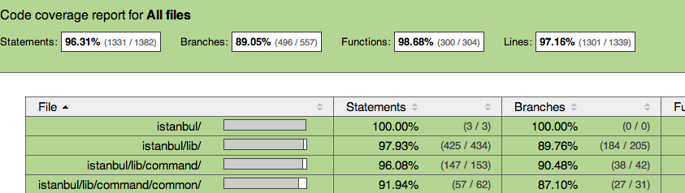

ECMAScript tools
composable modules and transpiler infrastructure
Yusuke Suzuki (a.k.a Constellation)
composable modules and transpiler infrastructure
Yusuke Suzuki (a.k.a Constellation)
ECMAScript is now widely used
And ECMAScript tools are also developed widely
Transpiler must also do minify task...
Because they use raw script text as IR
We suggest using Mozilla JS AST as IR
var i = 42;
{
"type": "Program",
"body": [
{
"type": "VariableDeclaration",
"declarations": [
{
"type": "VariableDeclarator",
"id": {
"type": "Identifier",
"name": "i"
},
"init": {
"type": "Literal",
"value": 42
}
}
],
"kind": "var"
}
]
}
By using AST as IR, we can pass rich information
And we can develop modules using AST as IR and compose them
We'll introduce mainly 3 modules
ECMAScript parsing infrastructure for multipurpose analysis : link
Esprima provides complete ECMAScript parser (including strict-mode syntax check)
| Input | JavaScript code |
| Output | Mozilla JavaScript AST |
ECMAScript code generator : link
Escodegen provides ECMAScript code generator
principle:
// structurally equal parse(generate(parse(code))) === parse(code)
Escodegen do not mangle names and do other things
This keeps module simple and composable
| Input | Mozilla JavaScript AST |
| Output | JavaScript |
ECMAScript mangler / minifier / optimizer : link
Esmangle doesn't parse / generate code. It's only responsible to optimizing AST
function upperBound(array, func) {
var diff, len, i, current;
len = array.length;
i = 0;
while (len) {
diff = len >>> 1;
current = i + diff;
if (func(array[current])) {
len = diff;
} else {
i = current + 1;
len -= diff + 1;
}
}
return i;
}
function upperBound(e,f){var b,a,c,d;a=e.length,c=0;while(a)b=a>>>1,d=c+b,f(e[d])?a=b:(c=d+1,a-=b+1);return c}
| Input | Mozilla JavaScript AST |
| Output | Mozilla JavaScript AST |
Because it uses AST as IR, modules can preserve original line/column information
For example...
And we can develop other small (or large) modules using AST as IR
Because they use standarized IR - Mozilla JS AST
We can use them and combine them into large tools
These modules become transpiler infrastructure!
It can produce SourceMap to original code
new CoffeeScript compiler - well-modularized compiler
CoffeeScriptRedux compiler uses Escodegen as its backend
Sweet.js brings hygienic macros from languages like Scheme and Rust to JavaScript
sweet.js also uses Escodegen as its backend
 istanbul is coverage tool using Esprima & Escodegen
istanbul screen shot
If we develop modules using AST as IR, we can apply them to all transpiling languages that produce AST
For example...